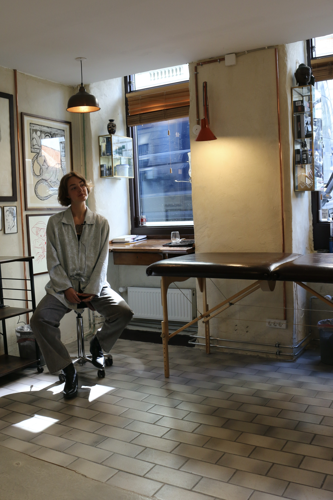
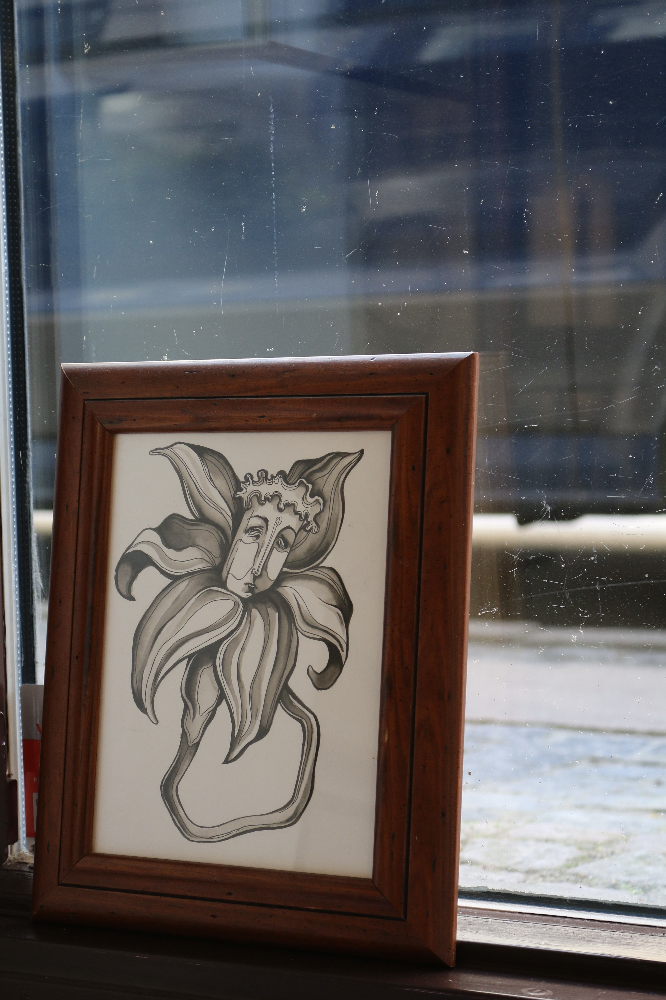
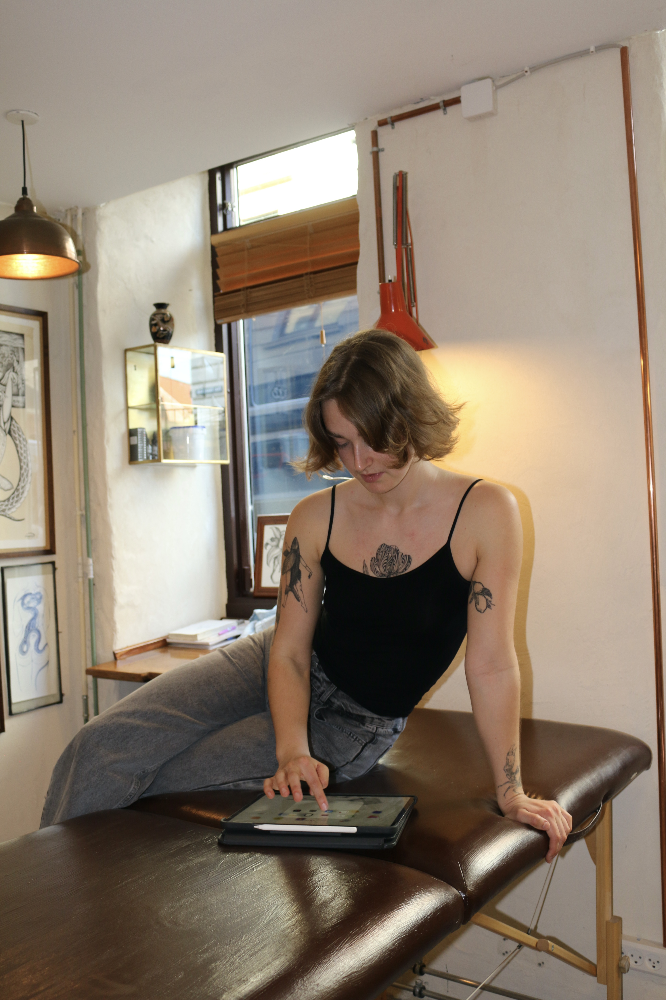
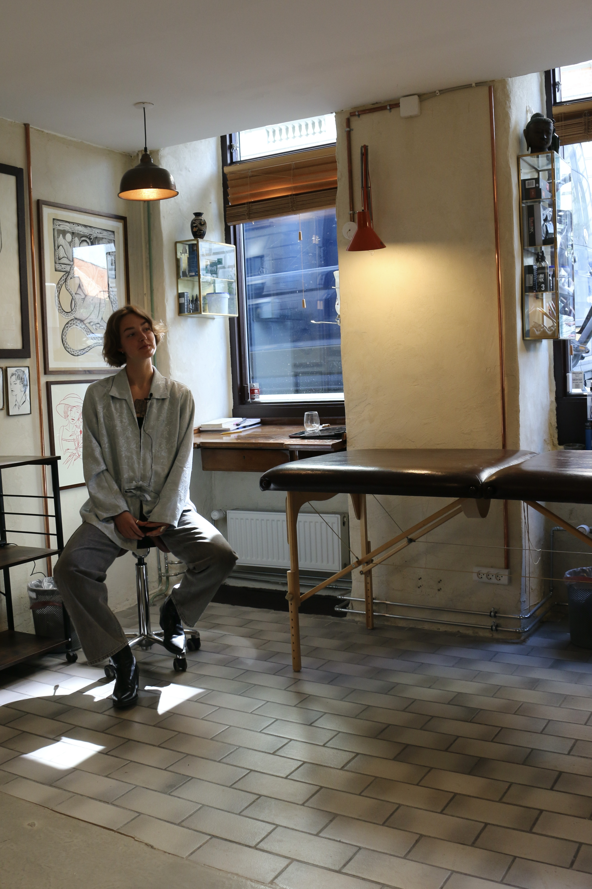
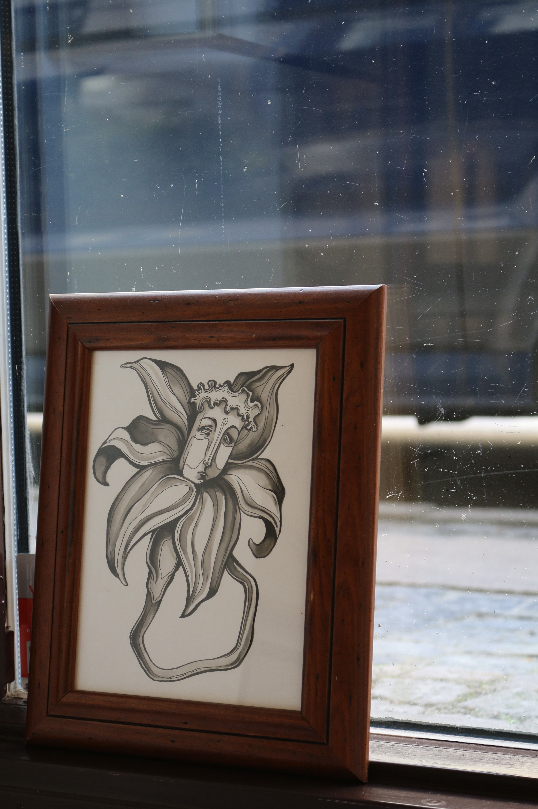
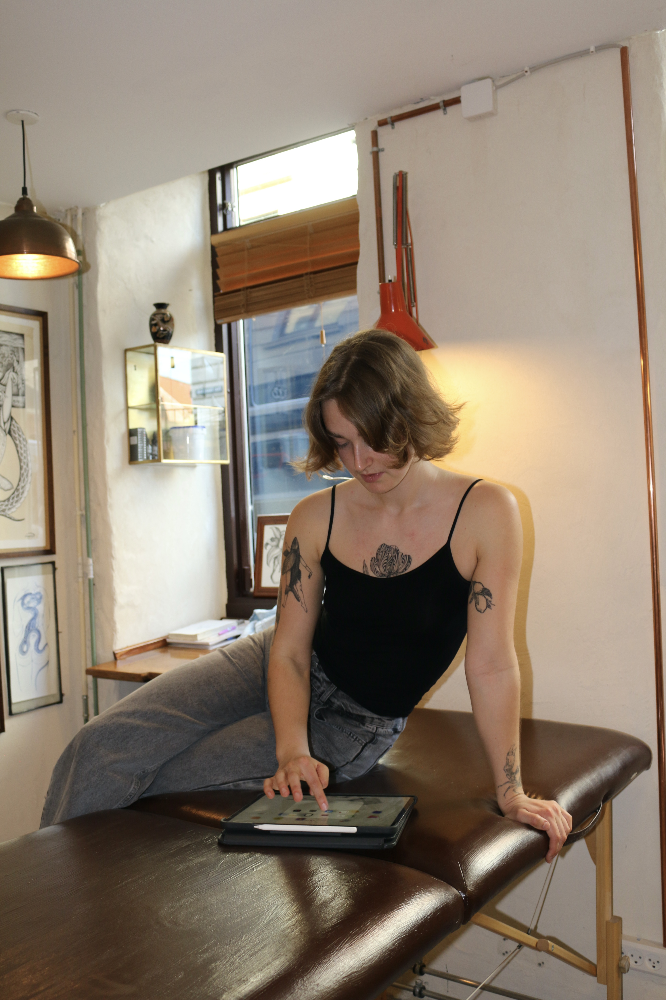

Anna Lundegaard
Passioneret ung tatovør
Anna, en 22-årig talentfuld tatovør, har sin oprindelse i en lille landsby i Vestjylland, men er nu bosat i Sydhavnen. Hendes passion for kunst og tegning har været en del af hendes liv siden barndommen, og det var hendes far, der gav hende tilliden til at forfølge tatoveringsverdenen ved at være hendes første kunde.
Med en karakteristisk stil, der fokuserer på ansigter og kroppens udtryk, formår Anna at skabe tatoveringer, der ikke blot er dekorative, men som også fortæller en historie og har en dybere betydning. Hendes inspiration kommer fra mennesker og deres individuelle udtryk og personligheder, hvilket giver hende mulighed for at skabe unikke og meningsfulde kunstværker.
Nyligt blev Anna headhuntet af ejeren af et nystartet tatoveringsstudie efter at have imponeret med sit talent. Denne nye mulighed har givet hende chancen for at udfordre sig selv og fortsætte med at udvikle sig som tatovør. Hendes drøm er at kunne åbne sit eget studie en dag og fortsætte med at skabe kunst, der berører og inspirerer andre.
Galleri
 




